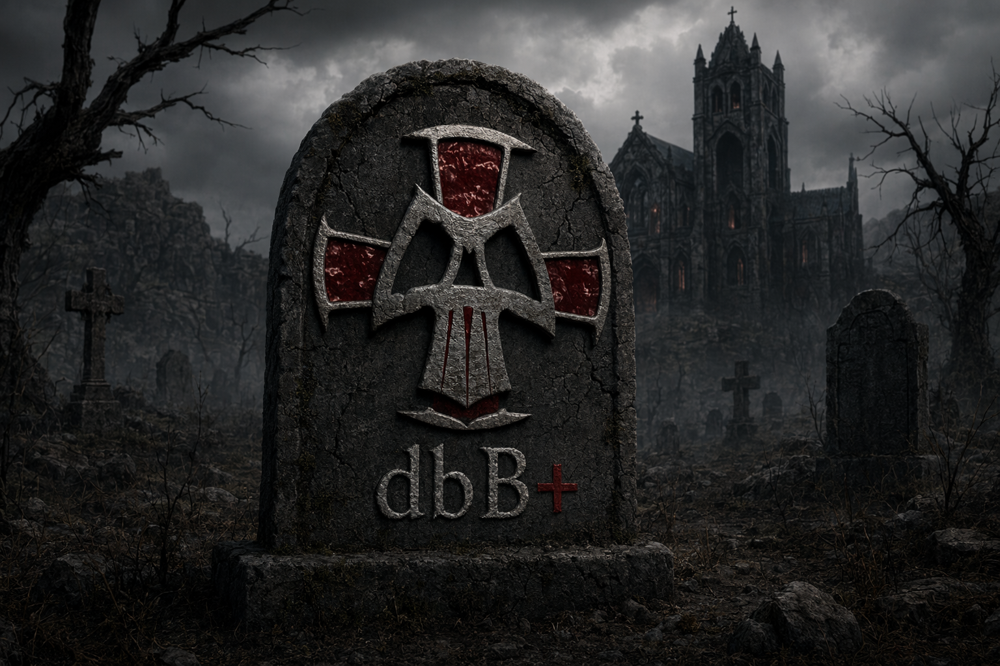

dbB memorial
dbB was an Austrian and German gaming clan founded in the late 1990s, centered on Quake games. This page preserves the clan image as a quiet digital tombstone.

dbB was an Austrian and German gaming clan founded in the late 1990s, centered on Quake games. This page preserves the clan image as a quiet digital tombstone.
